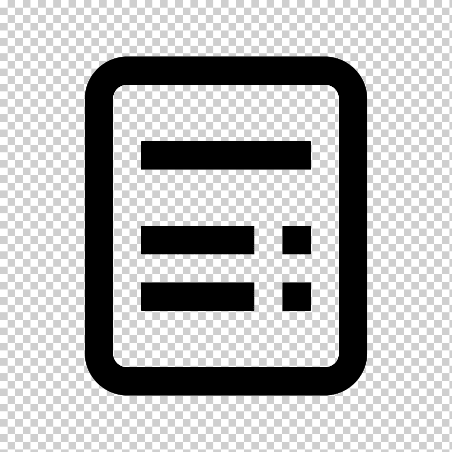

<ion-header>
    <ion-toolbar color="primary">
        <ion-title>

            <ion-icon class="ico" id="iconoCabecera" name="receipt-outline"> </ion-icon>
            Ordenes
        </ion-title>
    </ion-toolbar>
</ion-header>

<ion-content>
        <ion-list>
            <ion-list-header *ngIf="ordenes!='' ">
              Ordenes Activas
            </ion-list-header>
                <ion-list-header *ngIf="ordenes=='' ">
                    No hay Ordenes Disponibles
                </ion-list-header>  
            
    
            <ion-item *ngFor="let item of ordenes" [routerLink]="['/ordenesDetalles',item.idorden]">
              <!---|  slice:3:12-->
              <ion-avatar slot="start">
                
              </ion-avatar>
              <ion-label>
                <h2>Orden <strong>{{item.idorden}}</strong></h2>
                <h3>{{item.Direccion}}</h3>
                <p></p>
              </ion-label>
            </ion-item>
        </ion-list>


       
          
        
    

</ion-content>